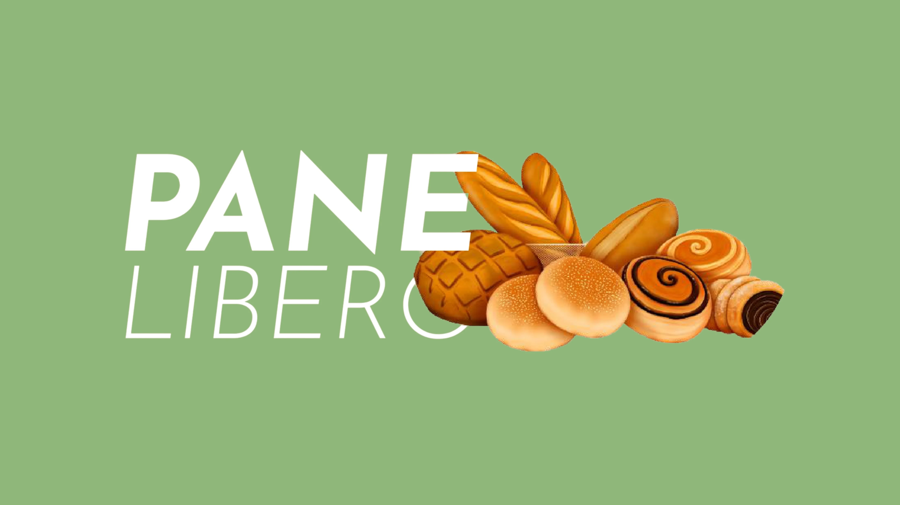
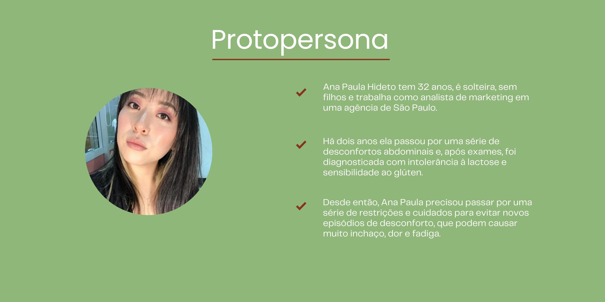
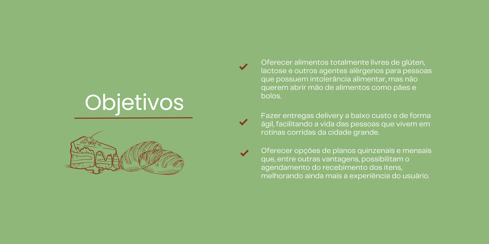
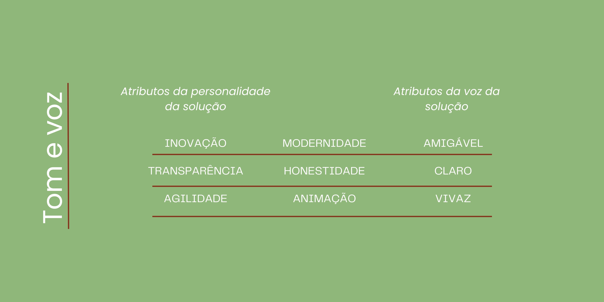
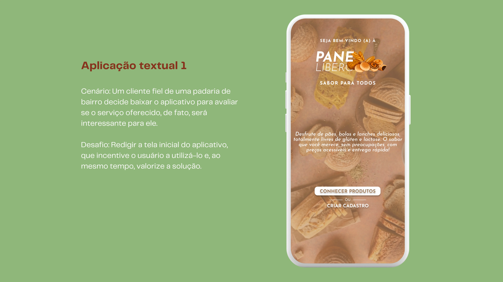
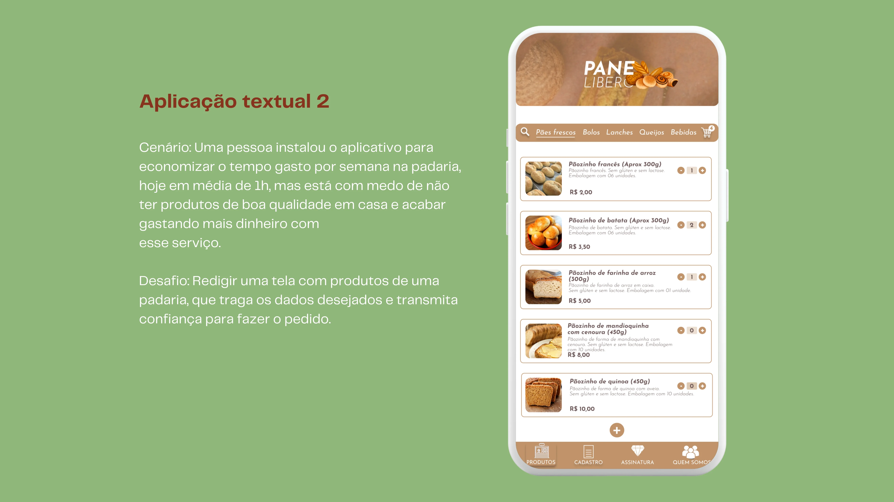
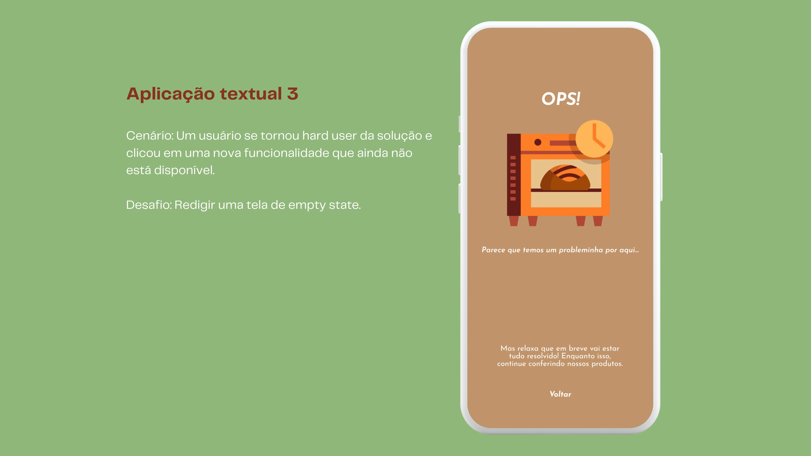
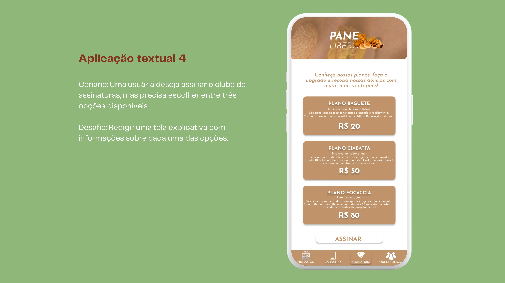
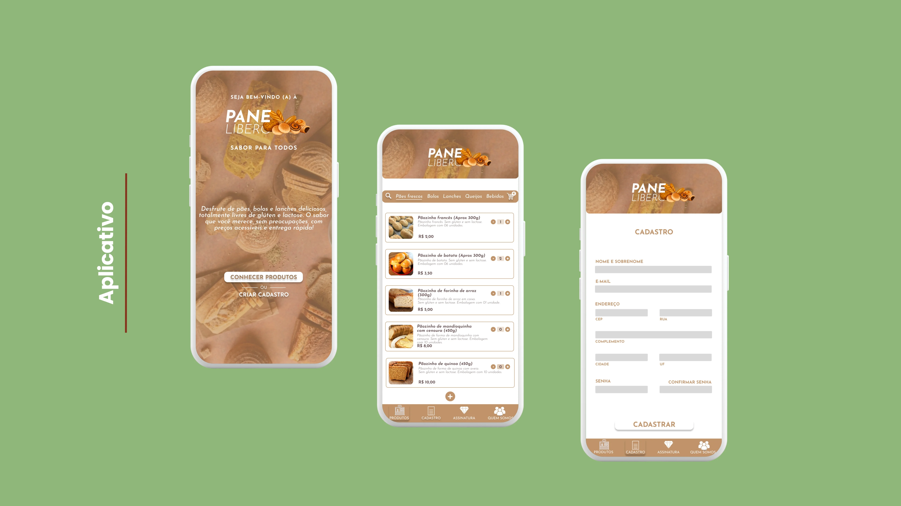
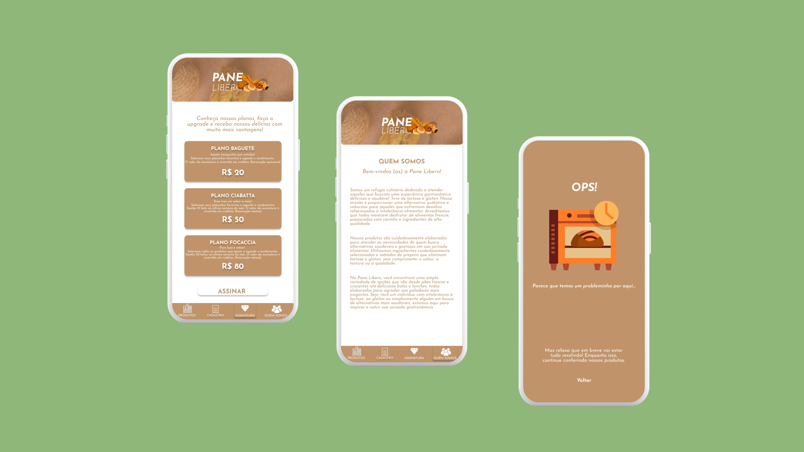

Este projeto apresenta um protótipo desenvolvido como parte do trabalho da disciplina de Escrita Criativa, pertencente à Especialização em Design de Interação para Artefatos Digitais da CESAR School. O objetivo deste trabalho é demonstrar a aplicação de técnicas de UX Writing em algumas telas do aplicativo de uma padaria fictícia, seguindo os desafios propostos pela docente.
#Desafio
Uma startup deseja modificar a relação dos brasileiros com a compra de pão, fornecendo, através de um aplicativo, serviços de delivery pré-agendado e de clube de assinatura para o recebimento de pães e outros produtos de padaria.
Para a realização do projeto, iniciei fazendo uma breve pesquisa exploratória para definir o escopo do aplicativo. Em seguida, investiguei comportamentos e necessidades específicas para definir uma protopersona. Com base nas dores e desafios identificados, estabeleci os objetivos do Pane Libero, que seria direcionado principalmente às pessoas com intolerância alimentar. A partir daí, defini o tom e a voz do aplicativo, me baseando em diretrizes de UX Writing, com foco em uma comunicação amigável, clara e direta, garantindo que os usuários se sintam acolhidos e bem informados.



Para o desenvolvimento do aplicativo, utilizei o Figma para criar um protótipo em alta fidelidade. As telas foram projetadas para atender aos requisitos específicos estabelecidos pela professora, conforme explicado em cada texto abaixo.





